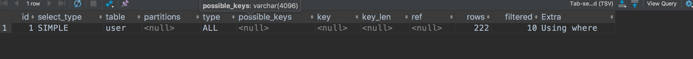

id
select 查询的序列号，包含一组可以重复的数字，表示查询中执行sql语句的顺序。一般有三种情况：
第一种：id全部相同，sql的执行顺序是由上至下；
第二种：id全部不同，sql的执行顺序是根据id大的优先执行；
第三种：id既存在相同，又存在不同的。先根据id大的优先执行，再根据相同id从上至下的执行。
select_type
select 查询的类型，主要是用于区别普通查询，联合查询，嵌套的复杂查询
simple：简单的select 查询，查询中不包含子查询或者union
primary：查询中若包含任何复杂的子查询，最外层查询则被标记为primary
subquery：在select或where 列表中包含了子查询
derived：在from列表中包含的子查询被标记为derived（衍生）MySQL会递归执行这些子查询，把结果放在临时表里。
union：若第二个select出现在union之后，则被标记为union，若union包含在from子句的子查询中，外层select将被标记为：derived
union result：从union表获取结果的select
partitions
表所使用的分区，如果要统计十年公司订单的金额，可以把数据分为十个区，每一年代表一个区。这样可以大大的提高查询效率。
type
这是一个非常重要的参数，连接类型，常见的有：all , index , range , ref , eq_ref , const , system , null 八个级别。
性能从最优到最差的排序：system > const > eq_ref > ref > range > index > all
对java程序员来说，若保证查询至少达到range级别或者最好能达到ref则算是一个优秀而又负责的程序员。
all：（full table scan）全表扫描无疑是最差，若是百万千万级数据量，全表扫描会非常慢。
index：（full index scan）全索引文件扫描比all好很多，毕竟从索引树中找数据，比从全表中找数据要快。
range：只检索给定范围的行，使用索引来匹配行。范围缩小了，当然比全表扫描和全索引文件扫描要快。sql语句中一般会有between，in，>，< 等查询。
ref：非唯一性索引扫描，本质上也是一种索引访问，返回所有匹配某个单独值的行。比如查询公司所有属于研发团队的同事，匹配的结果是多个并非唯一值。
eq_ref：唯一性索引扫描，对于每个索引键，表中有一条记录与之匹配。比如查询公司的CEO，匹配的结果只可能是一条记录，
const：表示通过索引一次就可以找到，const用于比较primary key 或者unique索引。因为只匹配一行数据，所以很快，若将主键至于where列表中，MySQL就能将该查询转换为一个常量。
system：表只有一条记录（等于系统表），这是const类型的特列，平时不会出现，了解即可
possible_keys
显示查询语句可能用到的索引(一个或多个或为null)，不一定被查询实际使用。仅供参考使用。
keys
显示查询语句实际使用的索引。若为null，则表示没有使用索引。
key_len
显示索引中使用的字节数，可通过key_len计算查询中使用的索引长度。在不损失精确性的情况下索引长度越短越好。key_len 显示的值为索引字段的最可能长度，并非实际使用长度，即key_len是根据表定义计算而得，并不是通过表内检索出的。
ref
显示索引的哪一列或常量被用于查找索引列上的值。
rows
根据表统计信息及索引选用情况，大致估算出找到所需的记录所需要读取的行数，值越大越不好。
extra
Using filesort： 说明MySQL会对数据使用一个外部的索引排序，而不是按照表内的索引顺序进行读取。MySQL中无法利用索引完成的排序操作称为“文件排序” 。出现这个就要立刻优化sql。
Using temporary： 使用了临时表保存中间结果，MySQL在对查询结果排序时使用临时表。常见于排序 order by 和 分组查询 group by。 出现这个更要立刻优化sql。
Using index： 表示相应的select 操作中使用了覆盖索引（Covering index），避免访问了表的数据行，效果不错！如果同时出现Using where，表明索引被用来执行索引键值的查找。如果没有同时出现Using where，表示索引用来读取数据而非执行查找动作。
覆盖索引（Covering Index） ：也叫索引覆盖，就是select 的数据列只用从索引中就能够取得，不必读取数据行，MySQL可以利用索引返回select 列表中的字段，而不必根据索引再次读取数据文件。
Using index condition： 在5.6版本后加入的新特性，优化器会在索引存在的情况下，通过符合RANGE范围的条数 和 总数的比例来选择是使用索引还是进行全表遍历。
Using where： 表明使用了where 过滤
Using join buffer： 表明使用了连接缓存
impossible where： where 语句的值总是false，不可用，不能用来获取任何元素
distinct： 优化distinct操作，在找到第一匹配的元组后即停止找同样值的动作。
filtered
一个百分比的值，和rows 列的值一起使用，可以估计出查询执行计划(QEP)中的前一个表的结果集，从而确定join操作的循环次数。小表驱动大表，减轻连接的次数。
如何判断失效索引
在创建联合索引的时候，需要注意最左前缀原则。

在使用索引查询的情况下，type会是index。借鉴阿里巴巴java开发手册，看看阿里是怎么规范索引的。
用于索引的最好的备选数据列是那些出现在WHERE子句、join子句、ORDER BY或GROUP BY子句中的列。
仅仅出现在SELECT关键字后面的输出数据列列表中的数据列不是很好的备选列
- 【强制】业务上具有唯一特性的字段，即使是多个字段的组合，也必须建成唯一索引。 说明:不要以为唯一索引影响了 insert 速度，这个速度损耗可以忽略，但提高查找速度是明 显的;另外，即使在应用层做了非常完善的校验控制，只要没有唯一索引，根据墨菲定律，必 然有脏数据产生。
- 【强制】超过三个表禁止 join。需要 join 的字段，数据类型必须绝对一致;多表关联查询时， 保证被关联的字段需要有索引。
说明:即使双表 join 也要注意表索引、SQL 性能。 - 【强制】在 varchar 字段上建立索引时，必须指定索引长度，没必要对全字段建立索引，根据 实际文本区分度决定索引长度即可。 说明:索引的长度与区分度是一对矛盾体，一般对字符串类型数据，长度为 20 的索引，区分度会高达 90%以上，可以使用 count(distinct left(列名, 索引长度))/count(*)的区分度
来确定。 - 【强制】页面搜索严禁左模糊或者全模糊，如果需要请走搜索引擎来解决。 说明:索引文件具有 B-Tree 的最左前缀匹配特性，如果左边的值未确定，那么无法使用此索 引。
- 【推荐】如果有 order by 的场景，请注意利用索引的有序性。order by 最后的字段是组合 索引的一部分，并且放在索引组合顺序的最后，避免出现 file_sort 的情况，影响查询性能。 正例:where a=? and b=? order by c; 索引:a_b_c 反例:索引中有范围查找，那么索引有序性无法利用，如:WHERE a>10 ORDER BY b; 索引 a_b 无法排序。
- 【推荐】利用覆盖索引来进行查询操作，避免回表。
说明:如果一本书需要知道第 11 章是什么标题，会翻开第 11 章对应的那一页吗?目录浏览 一下就好，这个目录就是起到覆盖索引的作用。 正例:能够建立索引的种类:主键索引、唯一索引、普通索引，而覆盖索引是一种查询的一种 效果，用explain的结果，extra列会出现:using index。 - 【推荐】利用延迟关联或者子查询优化超多分页场景。
说明:MySQL 并不是跳过 offset 行，而是取 offset+N 行，然后返回放弃前 offset 行，返回 N 行，那当 offset 特别大的时候，效率就非常的低下，要么控制返回的总页数，要么对超过 特定阈值的页数进行 SQL 改写。
正例:先快速定位需要获取的 id 段，然后再关联:
SELECT a.* FROM 表 1 a, (select id from 表 1 where 条件 LIMIT 100000,20 ) b where a.id=b.id - 【推荐】SQL 性能优化的目标:至少要达到 range 级别，要求是 ref 级别，如果可以是 consts 最好。
说明:
1)consts 单表中最多只有一个匹配行(主键或者唯一索引)，在优化阶段即可读取到数据。 2)ref 指的是使用普通的索引(normal index)。
3)range 对索引进行范围检索。
反例:explain 表的结果，type=index，索引物理文件全扫描，速度非常慢，这个 index 级 别比较 range 还低，与全表扫描是小巫见大巫。 - 【推荐】建组合索引的时候，区分度最高的在最左边。
正例:如果 where a=? and b=? ，a 列的几乎接近于唯一值，那么只需要单建idx_a索引即可。说明:存在非等号和等号混合判断条件时，在建索引时，请把等号条件的列前置。如:where a>?and b=?那么即使 a 的区分度更高，也必须把 b 放在索引的最前列。
阿里巴巴 Java 开发手册
- 【推荐】防止因字段类型不同造成的隐式转换，导致索引失效。
- 【参考】创建索引时避免有如下极端误解: 1)宁滥勿缺。认为一个查询就需要建一个索引。 2)宁缺勿滥。认为索引会消耗空间、严重拖慢更新和新增速度。3)抵制惟一索引。认为业务的惟一性一律需要在应用层通过“先查后插”方式解决。
在这里解释一下索引长度的问题和最左匹配原则的理解
索引在innodb引擎中其实以索引文件的形式存在。innodb是聚簇索引，所以要求每张表都要有主键，这样数据在测盘中的存储就变得有规则，而不是一块一块分开的文件。这又涉及到b+tree的结构。innodb的索引文件其实是以b+tree的数据结构存在的，不像myisam的b-tree结构。一条数据记录为一个二元组[key, data]，key为记录的键值，对于不同数据记录，key是互不相同的；data为数据记录除key外的数据。每个节点的data是存储值的，而不是存储数据的地址。这样数据在磁盘中就是真正意义上的在一起的数据。b+tree中的索引就是主键，其他的索引中存储的date都是数据的主键的值。
既然是文件，那么就会有大小。我们可以把单个索引看成是只有一列数据的组合索引。，Mysql Innodb中单列索引默认最大长度767bytes也就是255字符。索引字段长度超过时，如果是unique的会提示失败；如果是非唯一的，会自动截取前255位作为索引键。当索引长度超过设定的值的时候，查询会出现回表查询的情况。
参考阿里巴巴java开发手册